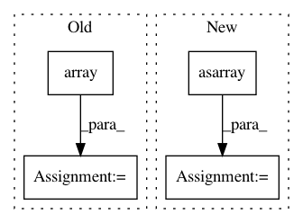

141ab53cc37dce728802803747584fc0fb82863b,examples/FasterRCNN/data.py,,get_all_anchors,#,57
Before Change
// sizes, and aspect ratios as given.
cell_anchors = generate_anchors(
stride,
scales=np.array(sizes, dtype=np.float) / stride,
ratios=np.array(ratios, dtype=np.float))
// anchors are intbox here.
// anchors at featuremap [0,0] are centered at fpcoor (8,8) (half of stride)
field_size = int(np.ceil(max_size / stride))
shifts = np.arange(0, field_size) * stride
shift_x, shift_y = np.meshgrid(shifts, shifts)
shift_x = shift_x.flatten()
shift_y = shift_y.flatten()
shifts = np.vstack((shift_x, shift_y, shift_x, shift_y)).transpose()
// Kx4, K = field_size * field_size
K = shifts.shape[0]
A = cell_anchors.shape[0]
field_of_anchors = (
cell_anchors.reshape((1, A, 4)) +
shifts.reshape((1, K, 4)).transpose((1, 0, 2)))
field_of_anchors = field_of_anchors.reshape((field_size, field_size, A, 4))
// FSxFSxAx4
// Many rounding happens inside the anchor code anyway
// assert np.all(field_of_anchors == field_of_anchors.astype("int32"))
field_of_anchors = field_of_anchors.astype("float32")
field_of_anchors[:, :, :, [2, 3]] += 1
return field_of_anchors
@memoized
After Change
w = np.sqrt(sz * sz / ratio)
h = ratio * w
anchors.append([-w, -h, w, h])
cell_anchors = np.asarray(anchors) * 0.5
field_size = int(np.ceil(max_size / stride))
shifts = (np.arange(0, field_size) * stride).astype("float32")
shift_x, shift_y = np.meshgrid(shifts, shifts)
In pattern: SUPERPATTERN
Frequency: 5
Non-data size: 4
Instances
Project Name: tensorpack/tensorpack
Commit Name: 141ab53cc37dce728802803747584fc0fb82863b
Time: 2019-05-28
Author: ppwwyyxx@users.noreply.github.com
File Name: examples/FasterRCNN/data.py
Class Name:
Method Name: get_all_anchors
Project Name: scipy/scipy
Commit Name: a85127751fb75f58680684523eab141dc00e6ce6
Time: 2013-04-04
Author: denis@laxalde.org
File Name: scipy/optimize/tnc.py
Class Name:
Method Name: _minimize_tnc
Project Name: has2k1/plotnine
Commit Name: 21d7042c38a23d4cfe6278ddd5fa1c247af4e376
Time: 2016-07-11
Author: has2k1@gmail.com
File Name: ggplot/stats/stat_density.py
Class Name:
Method Name: compute_density
Project Name: nipy/dipy
Commit Name: 625bdb0bf3556f9668d5ee34e54853e71787689b
Time: 2020-03-02
Author: karp2601@dinf-0051-05b.DInf.fsci.usherbrooke.ca
File Name: dipy/reconst/csdeconv.py
Class Name:
Method Name: mask_for_response_ssst
Project Name: SheffieldML/GPy
Commit Name: a510524620a7c47f0cb8494452b678310f9d9ec3
Time: 2013-01-31
Author: n.durrande@sheffield.ac.uk
File Name: GPy/kern/linear.py
Class Name: linear
Method Name: __init__